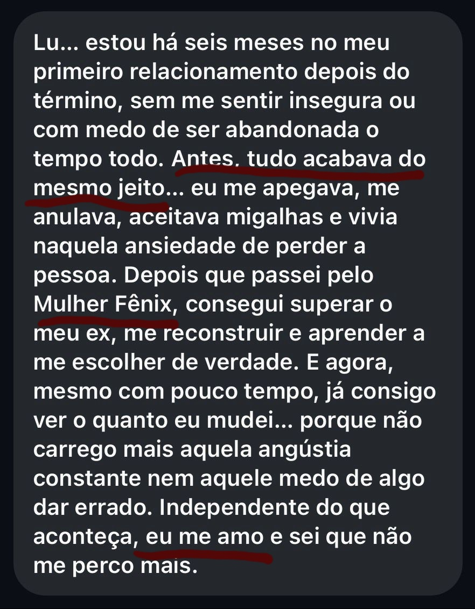
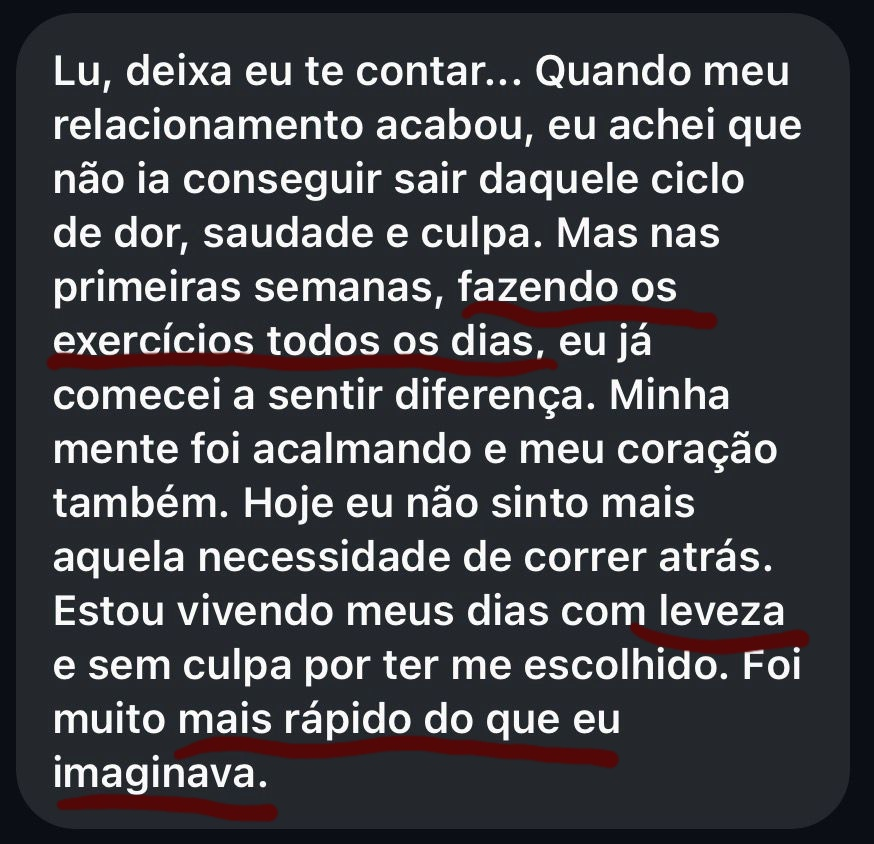

O passo a passo psicanalítico para reconstruir sua autoestima, se libertar dos padrões de dor e voltar a confiar no amor.
Em apenas 21 dias, você vai aprender a transformar o coração partido em poder pessoal, autoconfiança e liberdade emocional.
Você se doou demais. E agora sente que perdeu a si mesma.
Quantas vezes você achou:
Mas, no fim, lá estava você de novo:
Eu sei exatamente o que você sente. Porque eu também já estive nesse lugar, mas descobri o caminho pra sair dele:
O Protocolo Mulher Fênix
.png)
Um curso online psicanalítico e transformador criado para mulheres que já se doaram demais e agora querem se reencontrar, se fortalecer e se tornar emocionalmente livres.
Você vai entender a raiz das suas repetições, curar o autoabandono e reconstruir a sua autoestima com o Método SOLTA. Este é um processo terapêutico criado e aplicado por mim, Luciane Freire, psicanalista há mais de 10 anos.
Esse é o mesmo caminho que tirou dezenas de mulheres de relações destrutivas e as conduziu de volta para o amor mais importante de todos: o próprio.
O que você vai viver dentro do curso:
.png)
Quem te conduz nessa jornada?
Luciane Freire
Psicanalista, Pedagoga e coautora do livro Mulheres que Prosperam.
.png)
Luciane Freire
Psicanalista, Pedagoga e coautora do livro Mulheres que Prosperam.
Há mais de 10 anos, atendo mulheres que perderam a autoestima em relacionamentos abusivos ou desgastantes e as ajudo a reconstruir suas vidas com base em autoconhecimento e amor-próprio.
Eu já vivi relações que me quebraram — e é por isso que hoje ensino, com profundidade e empatia, o mesmo caminho que me trouxe de volta à liberdade emocional.
O Mulher Fênix nasceu do meu próprio renascimento.
O que minhas alunas dizem:


Bônus Exclusivos para as Primeiras Inscritas
10 ações para fortalecer seu posicionamento e segurança.
Valor: R$ 29730 pontos que você deve avaliar em um homem antes de entrar em um relacionamento.
Valor: R$ 249Sessões semanais ao vivo com Luciane Freire + Comunidade Whatsapp.
Valor: R$ 597Aula Especial: Como Reconhecer um Homem Emocionalmente Disponível.
Valor: R$ 399Valor total do pacote: R$ 2.742,00
Mas hoje, você leva tudo isso por apenas:
ou R$ 197 à vista
Você tem uma semana completa para testar o curso. Se não amar, devolvemos 100% do seu dinheiro. Sem burocracia.
O risco é todo meu. O recomeço é todo seu.
Atenção: Vagas limitadas enquanto esta página estiver no ar.
Escolher a si mesma é o primeiro ato de amor.
QUERO RENASCER AGORA – GARANTIR MINHA VAGA